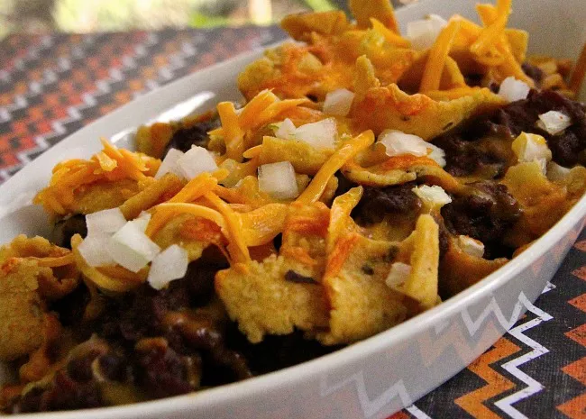

Spaghetti-O Pie

Description
Believe me, I'm all for a quick dinner fix. And who doesn't love a pre-made pie filling? But something about this Spaghetti-O pie put me in a state of despair.
Ingredients
- 1 frozen pie crust
- 2 cans chili with beans, divided
- ⅓ cup shredded pepper Jack cheese
- ⅓ cup shredded cheddar cheese
- ⅓ cup shredded mozzarella cheese
- 1 large egg, beaten
- 2 cups corn chips
- Desired toppings (such as sour cream, guacamole, pico de gallo, fresh cilantro)
Steps
- Preheat the oven to 350 degrees. Prick the frozen pie crust all over with a fork.
- Inside the shell, combine 1 can of chili with the cheeses and beaten egg. Use the other can of chili to fill up the remainder of the pie crust, without adding enough to cause overflow.
- Crush the corn chips inside a zip-top bag, then sprinkle the crumbs evenly on the top of the pie filling. Bake for 1 hour on the lower rack of the oven. Allow to cool completely, then garnish, and serve.